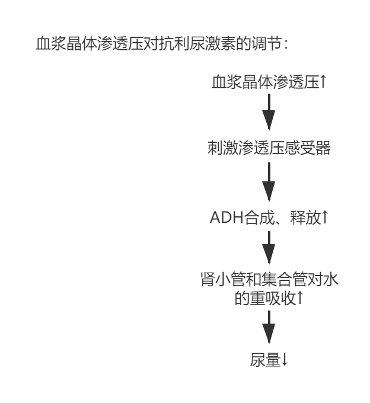

生物医学工程 | 解剖学 - 泌尿系统
泌尿系统
排泄的概念
排泄：排出机体代谢过程中产生的代谢终产物，多余的水和无机盐，以及进入体内的异物
肾脏基本大体解剖结构
表层皮质，深部髓质。
皮质=肾小体（深入髓质的部分称肾柱）+肾小管。
髓质=肾锥体。
锥体根部-肾乳头-肾小盏-肾大盏-肾盂-输尿管
组织结构中的基本概念

肾单位：肾的基本功能单位（=肾小体+肾小管）
肾小体：=肾小球（血管球，与入球小动脉+出球小动脉相连）+肾小囊（包裹肾小球）
肾小管：单层上皮细胞组成。近球小管，髓袢细段，远球小管
肾单位的基本的结构形式，几类不同的肾单位（皮质和髓质，各自的特点，一个负责排泄和吸收，一个负责浓缩和稀释，因为小管的长度的不同）
肾单位可以分为皮质肾单位和髓质肾单位
皮质肾单位：占比高。入球小动脉比出球粗，髓袢短
髓质肾单位：占比低。髓袢长，肾小球体积大。出球小动脉=网状毛细血管+U形直小血管

集合管：在尿浓缩中起作用
肾小球旁器（参与肾素的释放与调节）=球旁细胞+致密斑+球外系膜细胞
肾脏血流的基本特点
-
供应很丰富，而且分布不均匀，血管阻力小
-
腹主A →肾A →叶间A →弓形A → 小叶间A→入球小A →肾小球毛细血管网→出球小A →肾小管毛细血管网 →小叶间V →弓形V →叶间V→肾V
正常尿液理化性质、尿的生成过程：滤过（位置、GFR、滤过分数、滤过膜及其通透性、动力、影响因素）
尿液的生成：
- 肾小球的滤过作用；
- 肾小管和集合管的重吸收作用；
- 肾小管和集合管的分泌和排泄作用
位置：血液流过 肾小球，滤出到 肾小囊 中
肾小球滤过率GFR：单位时间内两肾生成的滤液量
滤过分数：肾小球滤过率与肾血浆流量的比值
肾小球的滤过作用取决于：滤过膜的通透性和滤过面积，有效滤过压
肾小球滤过膜结构：内皮，基膜层，足细胞小突起（防止蛋白质漏出）
血-尿屏障：3层屏障，足细胞被认为是最后一道屏障。血液-滤过膜-肾小囊（原尿）
通透性：取决于分子质量大小和所带电荷（正电荷容易过）
动力：有效滤过压
有效滤过压=肾小球毛细血管血压 - （血浆胶体渗透压+肾小囊内压）
入球小动脉最高，出球小动脉最低
影响因素：滤过膜和有效滤过压的变化
滤过膜：滤过膜的通透性，有效滤过面积
有效滤过压：毛细血管血压（大量失血-滤过率下降-无尿，入球小动脉舒张-血压↑-滤过率↑），肾小囊内压（结石-滤过率↓），血浆胶体渗透压（血浆蛋白浓度）
重吸收的特点（重吸收——最主要的重吸收部位，分别吸收了什么物质，不可吸收的东西，超过吸收上限的东西（eg糖），糖的阈值）
概念：原尿中的成分经肾小管上皮细胞重新回到血液中
选择性重吸收：葡萄糖全部重吸收，水和电解质大部分重吸收，尿素等代谢产物少部分重吸收，肝酐不重吸收
有限性重吸收：血糖浓度过高，超出重吸收限度，则多余部分被排出体外
各段肾小管的重吸收能力不同：近球小管-主要部位（回收氨基酸，葡萄糖，大部分水和无机盐。微绒毛发达），远球小管/髓袢/集合管（回收无机盐-水盐平衡/酸碱平衡）
钠重吸收的主要方式\回漏与定比现象\醛固酮的影响、水重吸收的主要方式\ADH的影响、碳酸氢根\葡萄糖的重吸收
$Na^+$ 重吸收
Na泵主动转运，主要-近球小管
回漏：Na+和水通过紧密连接漏回小管腔内
定比：球管平衡，重吸收/滤过率=65-70%
Na+的重吸收量=主动重吸收量 - 回漏量
醛固酮：远曲小管-钠泵主动转运-受醛固酮调节
$Cl^-$ 的重吸收
近球小管-伴随着Na的被动重吸收（钠的重吸收造成电位差）；
髓袢-伴随着Na的继发性主动重吸收
水的重吸收
通过渗透作用，随溶质的吸收而被动重吸收。
集合管对水的重吸收量变化最大
脑垂体后叶释放的抗利尿激素（ADH）调节远曲小管和集合管的重吸收
$K^+$ 的重吸收与分泌
重吸收：近球小管最多。基本都被吸收完了。主动转运
分泌：最终排出的K是远曲小管和集合管分泌而来
$HCO_3^-$ 的重吸收
以 $CO_2$ 的形式重吸收

葡萄糖的重吸收
主要-近曲小管
主动转运：Na-葡萄糖同向转运——一旦载体蛋白饱和，则到达转运上限
葡萄糖的最大转运量（TMG，出现糖尿），肾糖阈（尿中开始出现葡萄糖）
K+\H+\NH4的分泌、影响小管功能的因素
K+\H+\NH4的分泌
K+的分泌：$K^±Na^+$交换，促进Na的重吸收。远曲小管和集合管分泌
H+的分泌：$H^±Na^+$交换，维持酸碱平衡。近曲小管分泌
NH3的分泌：促进排酸，增加$NaHCO_3$的重吸收，维持酸碱平衡。远球小管和集合管分泌
影响小管功能的因素——影响肾小管和集合管重吸收和分泌的因素
-
小管液的溶质浓度：溶质浓度↑，小管液渗透压↑，尿液↑——渗透利尿（甘露醇）
-
肾小球滤过率：球-管平衡。
$$
\frac{肾小管的重吸收}{肾小球的滤过率}=65\backsim70%
$$
泵漏模式：回收量 = 泵 – 漏
尿的浓缩与稀释：小管液量与渗透压变化的规律、髓质高渗梯度、直小血管的功能、浓缩尿与稀释尿形成的机理（受到垂体的调节-抗利尿激素）

尿液的稀释：主要发生在髓袢生支粗段。（髓袢：重吸收NaCl，不吸收水）+（远曲小管和集合管：ADH释放↓，水重吸收↓）
尿液的浓缩：（动力：肾髓质间质高渗）+（ADH↑，水重吸收↑）
髓质高渗梯度是浓缩尿的必要条件，只有髓袢的肾才能形成浓缩尿。组织液浓度/血浆渗透浓度↑，小管液不断进入组织间液。
髓质高渗梯度的形成机制：逆流倍增。U型管+主动重吸收$NaCl$

直小血管-逆流交换机制：维持高渗状态
直小血管作用：留住溶质，带走水分。越往底部溶质越多
“逆流”：原尿延肾小管先从皮质到髓质内带再返流回皮质的过程
“倍增”：这一过程将肾小管浓缩原尿的效率提高了一倍
| 髓袢升支粗段 | 远曲小管 | 集合管 | |
|---|---|---|---|
| 稀释尿 | 主动转运NaCl，对水不通透→低渗 | ADH↓，水重吸收↓→低渗 | ADH↓，水重吸收↓→低渗 |
| 浓缩尿 | 主动转运NaCl，对水不通透→低渗 | ADH↑，水重吸收↑→等渗 | 肾髓质间质高渗→高渗 |
调节：肾血量的自身调节、神经体液调节肾血量
原尿→肾小球的滤过作用→肾小管和集合管的重吸收和分泌→终尿
肾小球的滤过率：取决于毛细血管血压←肾血流量
肾小管和集合管的重吸收和分泌：小管液溶质浓度+球馆平衡←肾血流量
肾血流量的调节：自身调节+肾血流的神经和体液调节
肾血流的自身调节
动脉血压一定范围内波动，肾脏通过自身内部变化保持肾血流量处于相对稳定的状态——保持滤过率相对稳定
神经体液调节
神经：交感神经——缩血管

体液：肾上腺素和去甲肾上腺素——缩血管，血流量↓
肾小管及其集合管机能的调节：ADH/醛固酮调节肾小管功能
抗利尿激素ADH
分泌：下丘脑视上核、室旁核
储存：神经垂体
作用：远曲小管和集合管的水通透性↑，水重吸收↑，尿液浓缩，尿量↓
ADH释放的有效刺激主要是 血浆晶体渗透压的增高，循环血量的减少，动脉血压的改变



醛固酮
来源：肾上腺皮质球状带
作用：远曲小管和集合管保钠排钾，水随钠重吸收，尿量↓
机制：作用于肾小管上皮细胞内受体，诱导蛋白质合成，增加钠泵转运和钠通透性，进而导致钾的分泌增加
-
血浆中高钾低钠，醛固酮↑；
-
肾素-血管紧张素系统。
-
血管紧张素作用：缩血管升血压+刺激分泌醛固酮
-
调节肾素：肾血流量↓，肾交感神经兴奋，去甲肾上腺素↑，肾上腺素↑→肾素↑

排尿反射基本过程
- 感受器：膀胱壁的牵张感受器
- 传入纤维：盆神经
- 初级中枢：骶髓
- 高级中枢：大脑皮质
- 传出纤维：盆神经
- 效应器：逼尿肌（收缩）和内括约肌（舒张）
“最”
肾小球上皮细胞：滤过的最后一道屏障
近球小管重吸收物质种类最多，数量最大
近球小管是肾小管中最粗的一段
重点
-
泵和漏的模式——近球远球髓袢之间的差别
-
渗透压变化的规律
-
尿的形成和浓缩的机理在什么地方——收到神经垂体的调节。等渗水，净水
-
丘脑和核团负责合成，神经垂体负责储存和分泌
-
内分泌-血液循环
-
等渗水，清水，高渗水，甘露醇，出汗，失血的反应和机制
声明：此blog内容为上课笔记，仅为分享使用。部分图片和内容取材于课本、老师课件、网络。如果有侵权，请联系aursus.blog@gmail.com删除。